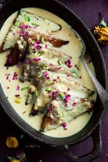

🍞 Shahi Tukda

Ingredients
- 6 slices of white bread (preferably day-old bread)
- 1/2 cup ghee (clarified butter)
- 1 cup sugar
- 1 cup water
- 1/2 cup milk
- 1/4 cup khoya (optional, for richness)
- 1/2 tsp cardamom powder
- 1/4 tsp saffron strands (optional)
- 1/4 cup almonds, slivered
- 1/4 cup pistachios, chopped (optional)
- 1 tbsp rose water or kewra water (optional)
- 1/4 cup dried rose petals (optional, for garnish)
Instructions
- Trim the edges of the bread slices and cut them into halves or quarters as preferred.
- Heat ghee in a pan and shallow fry the bread slices until golden brown and crispy. Remove and set aside on paper towels to drain excess ghee.
- In a separate saucepan, combine sugar and water to make a sugar syrup. Stir until the sugar dissolves and let it simmer for 5-7 minutes. Add cardamom powder and saffron (if using). Remove from heat.
- In another pan, heat the milk and add khoya (if using) to make a rich milk mixture. Stir well and bring it to a gentle simmer.
- Once the bread slices are fried, arrange them in a serving dish.
- Pour the sugar syrup evenly over the fried bread slices, allowing them to soak well.
- Then, pour the milk and khoya mixture over the soaked bread slices.
- Garnish with slivered almonds, chopped pistachios, and dried rose petals (optional).
- Allow the Shahi Tukda to sit for a few minutes so the flavors blend. Serve warm or chilled.
Serve With
- Sweet lassi
- Ice cream
- Fruit salad
💡 Tip: You can drizzle a little extra rose water or kewra water for a more fragrant version of Shahi Tukda.